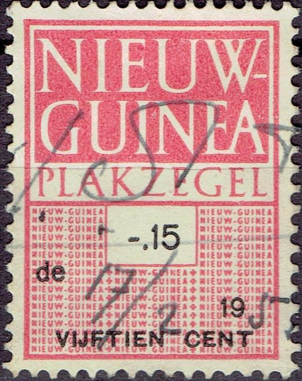

{kind=link}


Nederlands Nieuw Guinea
Return To Catalogue - Netherlands
Note: on my website many of the
pictures can not be seen! They are of course present in the
catalogue;
contact me if you want to purchase it.
1 c dark blue 2 c orange 2 1/2 c olive 3 c lilac 4 c green 5 c blue 7 1/2 c brown 10 c violet 12 1/2 c red With 'hulp nederland 1953 + 5 ct' overprint (1953) 5 c blue With 'UNTEA' overprint (1962) 2 c orange
15 c light brown 20 c blue 25 c red 30 c blue 40 c green 45 c brown 50 c orange 55 c grey 80 c violet Larger size 1 G red 2 G brown 5 G green With 'hulp nederland 1953 + 10 ct' overprint (1953) 15 c brown 25 c red With 'UNTEA' overprint (1962) 2 G brown 5 G green

1 c red and yellow 5 c brown and yellow (design as 1 c) 7 c brown, blue and lilac (1959) 10 c blue and brown 12 c green, blue and lilac (design as 7 c, 1959) 15 c yellow and brown (design as 10 c) 17 c lilac and blue (design as 7 c, 1959) 20 c green and brown (design as 10 c) With overprint 'UNTEA' (1962) 1 c red and yellow 5 c brown and yellow 7 c brown, blue and lilac 10 c blue and brown 12 c green, blue and lilac 15 c yellow and brown 17 c lilac and blue 20 c green and brown With red cross overprint (1955) '5' (red) + 5 c brown and yellow '10' (red) + 10 c blue and brown '10' (red) + 15 c yellow and brown

25 c red 30 c blue 40 c orange 45 c olive 55 c blue 80 c grey 85 c brown 1 G lilac With overprint 'UNTEA' (1962) 25 c red 30 c blue 40 c orange 45 c olive 55 c blue 80 c grey 85 c brown 1 G lilac
5 c + 5 c green (house with palm tree) 10 c + 5 c lilac (child near house) 25 c + 10 c blue (design as 5 c) 30 c + 10 c orange (design as 10 c)
5 c + 5 red-brown (child near beach with palm trees) 10 c + 5 green (child near hut) 25 c + brown (design as 5 c) 30 c + 10 c blue (design as 10 c)
5 c + 5 c blue, red and brown 10 c + 5 c brown, light brown and red 25 c + 10 c green, red and brown 30 c + 10 c olive, red and light brown
55 c blue and brown
5 c + 5 c red, green and lilac 10 c + 5 c green, light green and lilac 25 c + 10 c red, green and yellow 30 c + 10 c violet, green and lilac
25 c blue 30 c orange
Similar stamps were issued in The Netherlands (12 c + 8 c brown and 30 c + 10 c green).
5 c + 5 c grey, green and orange 10 c + 5 c lilac, black and blue 25 c + 10 c yellow, black and red 30 c + 10 c green and black
25 c green 30 c red
5 c + 5 c red and other colors 10 c + 5 c blue and other colors 25 c + 10 c yellow and other colors 30 c + 10 c green and other colors
25 c blue and red 30 c green and red
55 c brown
25 c multicolored 30 c multicolored
5 c + 5 c green, red and other colors 10 c + 5 c yellow and blue 25 c + 10 c blue, red and other colors 30 c + 10 c red, blue and other colors
For Postage Due stamps, click here.

Fiscal stamp, inscription "NIEUW-GUINEA PLAKZEGEL"
In a similar design exist stamps with inscription "LOONZEGEL", I have seen 10 c green, 50 c green, 1 G redbrown, 5 G redbrown and 10 G blue.
Postzegels - Stamps - Timbres-Poste - Briefmarken
{kind=link}